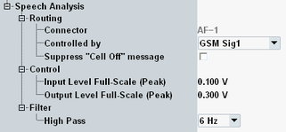
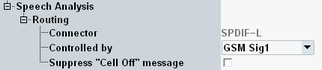

To access the speech analysis settings, select the "Speech Analysis" tab and press the "Config" hotkey. The tab is only displayed, if the currently active scenario involves a speech codec.
The following section describes the "Speech" tab of the configuration dialog box.


Indicates to which audio connectors the speech codec is connected. This setting is not configurable. It depends on the scenario and on the audio application instance.
- "AF-1": AF 1 IN and AF 1 OUT
- "AF-2": AF 2 IN and AF 2 OUT
- "SPDIF-L": left channel of SPDIF IN and SPDIF OUT
- "SPDIF-R": right channel of SPDIF IN and SPDIF OUT
- "No Connection": there is no connection between the speech codec and the audio connectors
Not applicable
Selects the controlling master application, to which the speech codec is connected.
Remote command:If the "... Signaling" softkey is selected and the cell signal is on and you press [ON | OFF], a warning can be displayed, asking whether you really want to switch off the cell signal.
The checkbox suppresses the warning.
Remote command:Not applicable
This setting configures the A/D conversion in the signal input path. It is only displayed if the speech codec is connected to AF connectors.
The value defines the peak voltage of the analog input signal that corresponds to the digital signal full-scale value.
Configure this setting according to the maximum voltage that you expect at the AF IN connector, for example the voltage delivered by a connected external audio generator.
Remote command:This setting configures the D/A conversion in the signal output path. It is only displayed if the speech codec is connected to AF connectors.
The value defines the peak voltage of the analog output signal that corresponds to the digital signal full-scale value.
Configure this setting according to the maximum voltage that you want to generate, for example the maximum voltage expected by a connected external audio analyzer.
Remote command:Configures the cutoff frequency of a highpass filter, located between the AF input connectors and the speech encoder. This setting is only displayed, if the speech codec is connected to AF connectors.
Remote command: